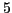
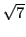
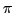

Next: Interval of a variable. Up: Variables and functions Previous: Variables and functions Contents Index
A variable is a quantity to which an unlimited number of values can be assigned. Variables are denoted by the later letters of the alphabet. Thus, in the equation of a straight line,
Numerical or absolute constants retain the same values in all problems, as , , , , etc.
Arbitrary constants, or parameters, are constants to which any
one of an unlimited set of numerical values may be assigned,
and they are supposed to have these assigned values throughout
the investigation. They are usually denoted by the earlier
letters of the alphabet. Thus, for every pair of values arbitrarily
assigned to  and , the equation
and , the equation